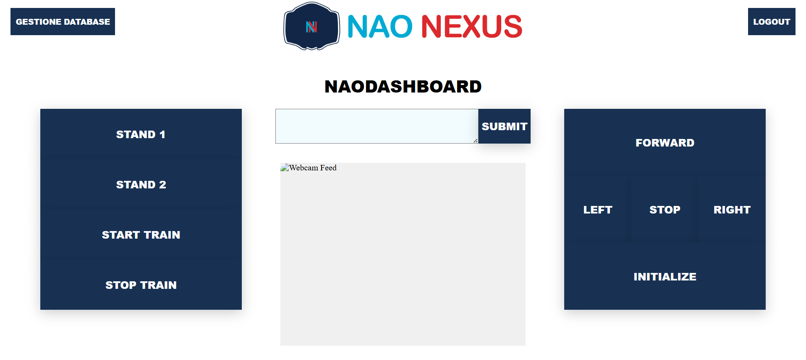

Nao Nexus
Fight and win, let’s begin
NaoRecovery
il tema della NaoChalleng 2025 è lo sport e il nostro progetto nasce con l’obiettivo di rendere il percorso di riabilitazione sportiva più efficace e personalizzato. Grazie al supporto del robot umanoide Nao, offriamo un sistema che accompagna l’atleta nel recupero, integrando tecnologia e attenzione alla persona.
Controllo e Aggiornamento dei Dati
Il sistema è composto da un’app mobile, che consente di gestire facilmente le sessioni di riabilitazione, e da una dashboard web, dove è possibile monitorare i progressi dell’atleta e aggiornare i dati in tempo reale.


Coaching Robotico Personalizzato
Nao interagisce con l’atleta, raccoglie informazioni sul suo stato e propone esercizi mirati, basandosi su una scheda medica personalizzata. Gli esercizi vengono mostrati in modo chiaro e adattati in base al tipo di infortunio e al livello di recupero, offrendo una guida costante durante la sessione.
Un compagno nella riabilitazione
Nao non sostituisce il personale medico, ma lo affianca in modo costante. È sempre disponibile per accompagnare l’atleta passo dopo passo nel percorso di recupero, offrendo un supporto preciso e organizzato che facilita la gestione delle attività riabilitative, rendendo il processo più fluido ed efficace.